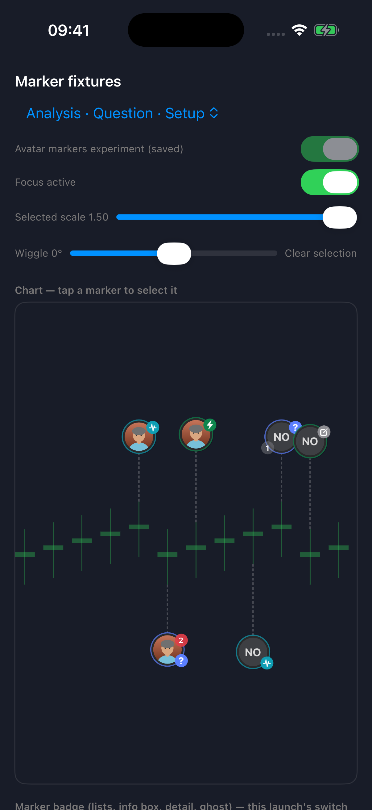
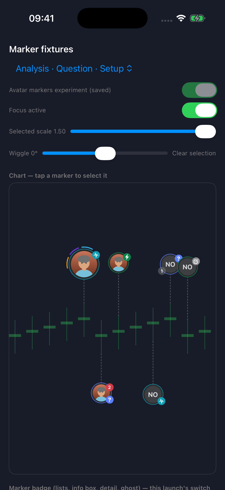
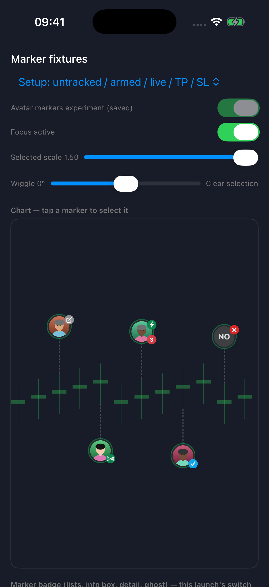
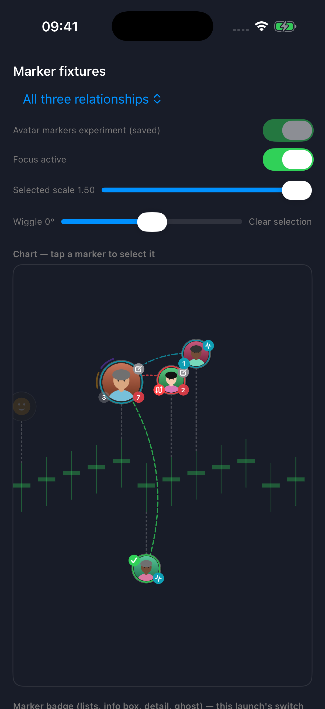
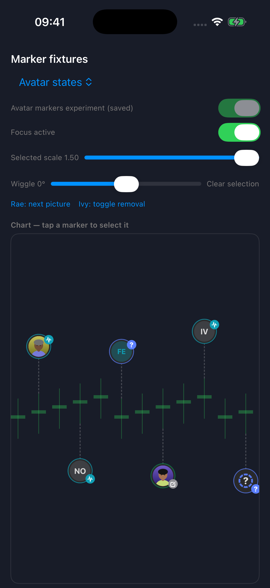
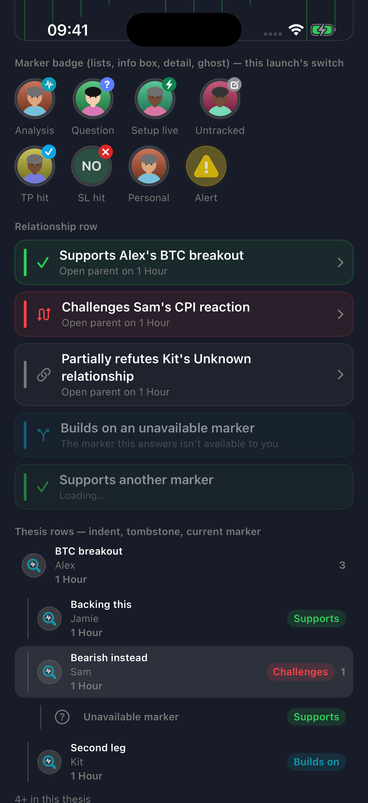
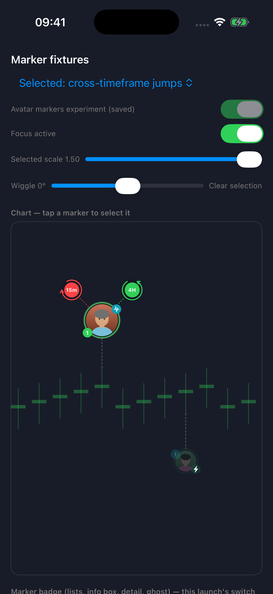
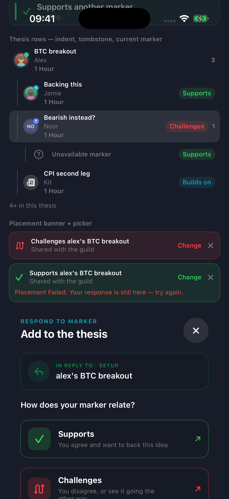
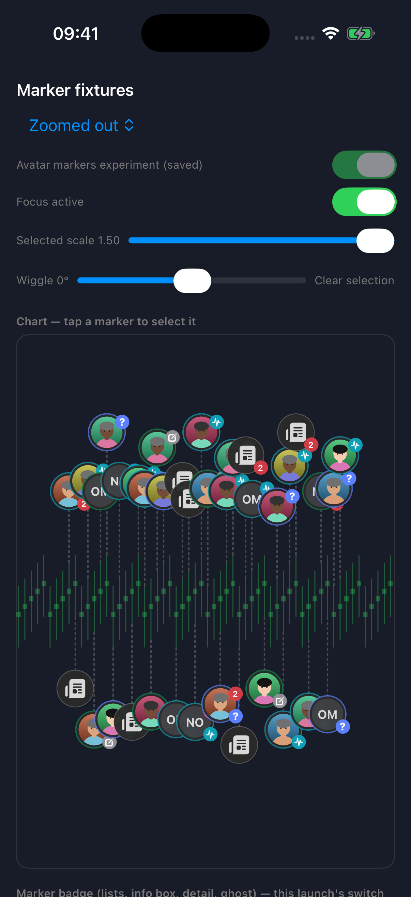
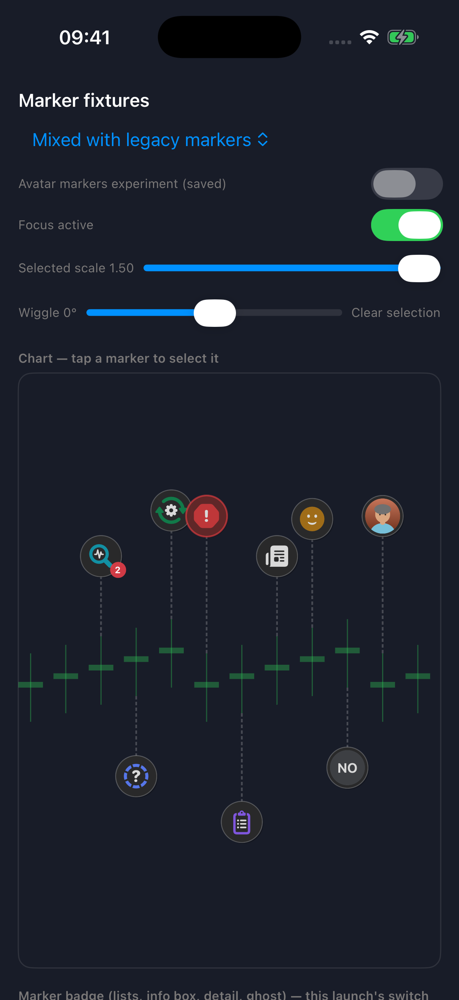

Review the visual hierarchy: who posted, what they mean, supporting context, and relationships.
Ready for owner visual review.These are simulator fixtures using the app’s marker renderer and synthetic portraits. Real-data chart validation and physical-device performance remain unverified. Stage 3 is paused pending your visual review. Engineering review and the bounded corrections are complete; the production and optimized profiling builds pass.
At rest
Author first, with a restrained intent ring and a small outward badge.

Selected Analysis
The selected face enlarges. Three short arcs indicate supporting context.

Setup lifecycle
Untracked, armed, live, take-profit and stop-loss states retain distinct badges.

Focused branch
Relationship rings replace intent rings; supporting arcs become subordinate.

Identity fallbacks
Repeated authors, missing pictures and failed picture loads.

Details and lists
Shared avatar badges across secondary surfaces. The corrected thesis rows appear below.

Cross-timeframe navigation
The corrected connector emerges clear of the intent badge. Jump positions and tap targets stay unchanged.

Thesis rows
Author avatars now identify Analysis, Question and Setup responses. Setup uses a neutral badge here because these rows receive no lifecycle state.

Density stress case
Existing placement is unchanged. Overlap is visible at this density; no clustering or resizing has been added.

Experiment off
The same development build can retain the existing presentation.

Click any image for its full-resolution capture.